- Чукчи живут на Чукотском полуострове — на самом северо-востоке России.
- Здесь долгая морозная зима, сильный ветер и бескрайняя тундра.
- Тундровые чукчи издавна разводили северных оленей, а береговые охотились и ловили рыбу.
- Переносной дом оленеводов называется ярангой: её каркас покрывают оленьими шкурами.
- Внутри устраивают тёплое спальное помещение — полог.
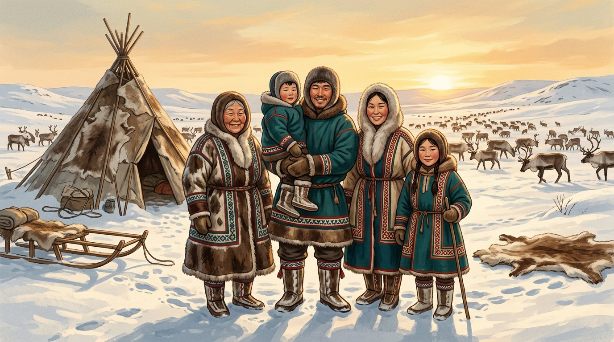
2026 · Год единства народов России
Чукчи
Люди настоящей тундры
Пять ребят — пять коротких историй о народе, который умеет жить в краю ветра, снега и Северного сияния.
Начать путешествие ↓Чукоткакрай на северо-востоке России
Лыгъоравэтльансамоназвание народа
5 историйдля пяти выступающих
01 / 05
Где живут и как устроен быт
Край, где начинается день
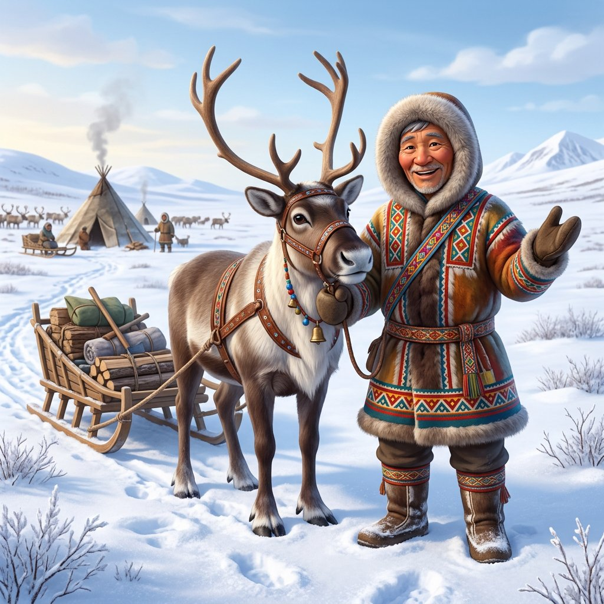
Оленьтранспорт, пища и материал для одежды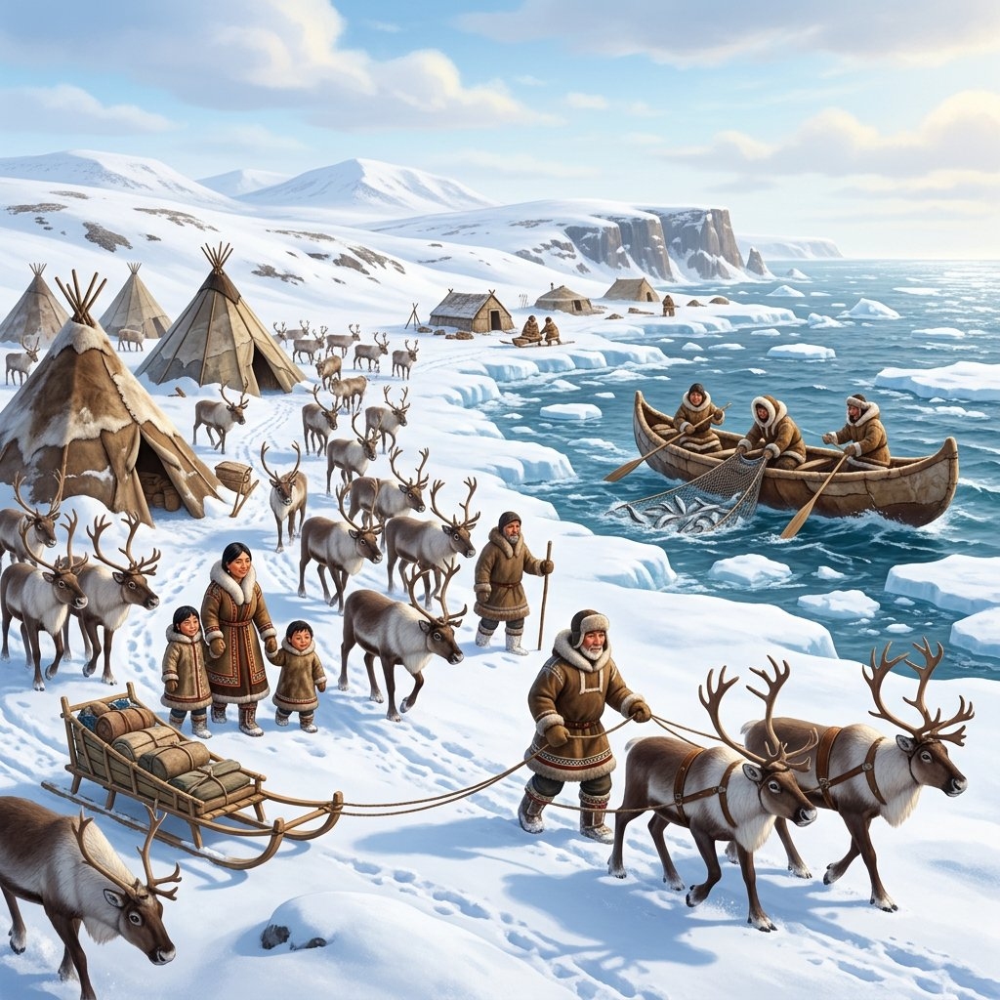
Два укладатундровые оленеводы и береговые охотники02 / 05
Национальный костюм
Одежда, которая хранит тепло
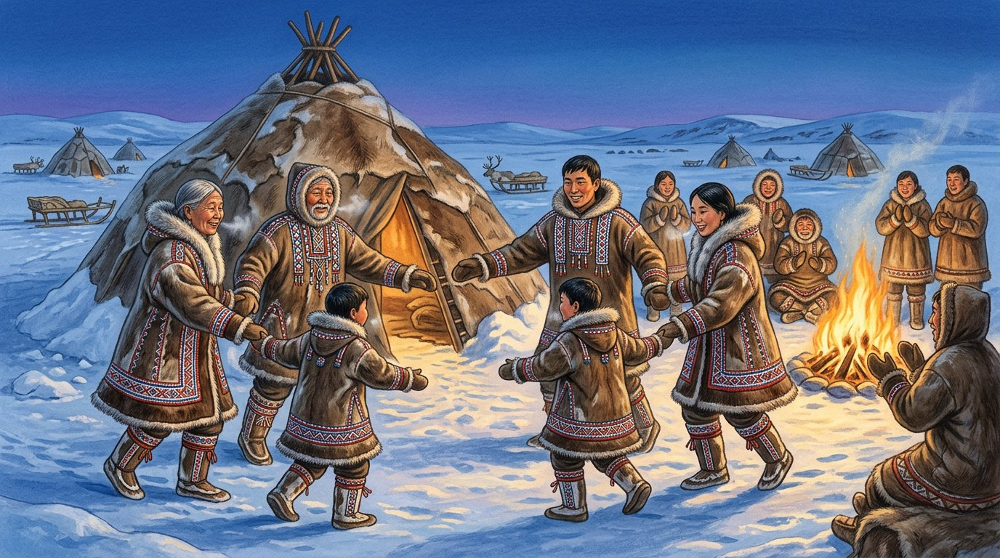
- Традиционную одежду чукчи шьют из оленьего меха.
- Меховая рубаха с капюшоном называется кухлянкой.
- На ноги надевают меховые штаны и тёплые сапоги — торбаса.
- Зимнюю одежду часто носят в два слоя: нижний — мехом к телу, верхний — мехом наружу.
- Края одежды украшают вышивкой, бисером и полосками цветного меха.
КУХЛЯНКАмеховая верхняя рубаха
ТОРБАСАтёплая меховая обувь
КЕРКЕРженский меховой комбинезон
03 / 05
Традиции и праздники
Благодарность природе
- Традиции чукчей тесно связаны с природой, морем и оленями.
- Осенью оленеводы проводят праздник Пэгытти — встречу звезды Альтаир.
- Береговые жители отмечают праздник кита и благодарят море за добычу.
- На праздниках люди поют, соревнуются и исполняют танцы под бубен.
- В движениях танца часто показывают повадки птиц и животных.
Пэгытти
Название связывают с появлением на небе звезды Альтаир. Для оленеводов это знак наступления нового сезонного цикла.
04 / 05
Что едят на обед
Вкус Севера
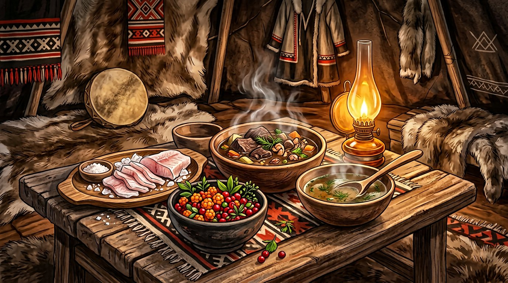
Еда даёт много энергии для жизни в холодном климате.
- Основу традиционной кухни составляют оленина, рыба и мясо морских животных.
- Мясо варят, сушат, замораживают или едят в виде строганины.
- Одно из известных блюд — рилькын: кашеобразная смесь из содержимого оленьего желудка, крови и жира.
- Также собирают коренья, травы и северные ягоды.
- Такая калорийная пища помогает сохранять силы в суровом климате.
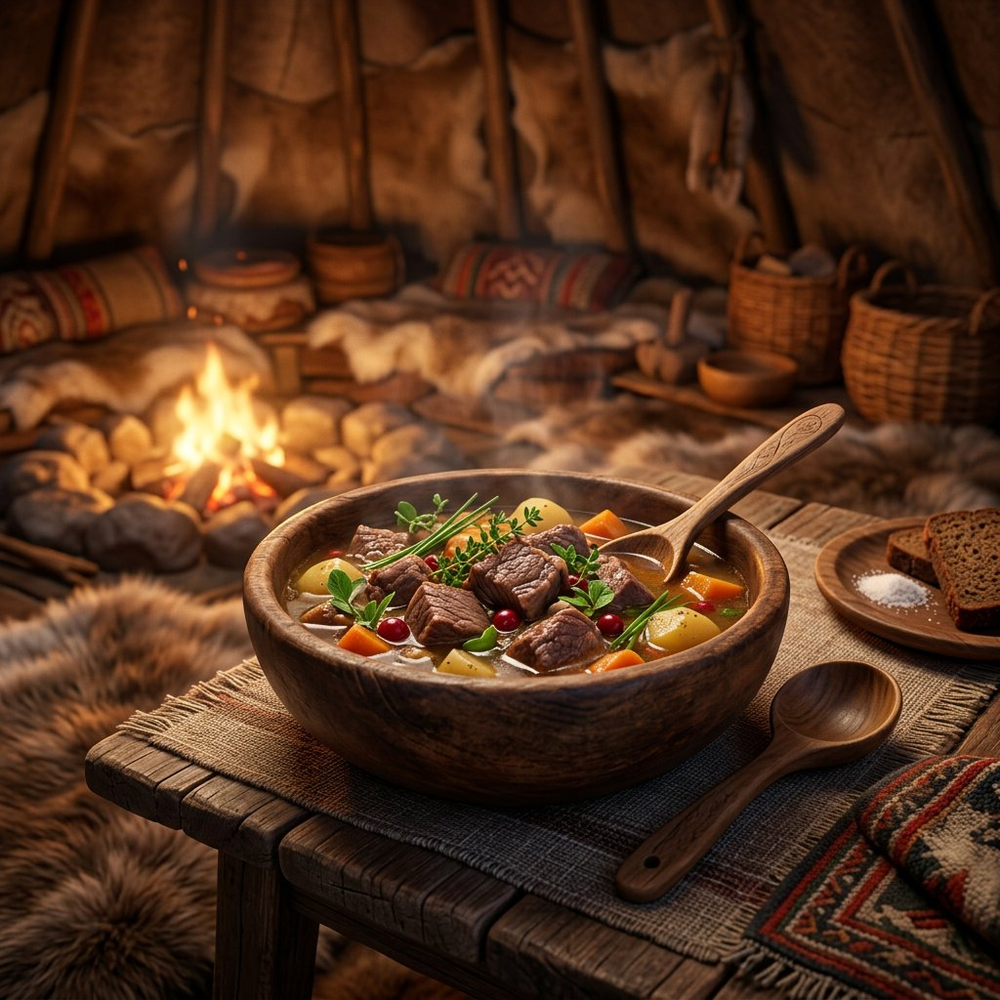
Оленинаварёная, сушёная, мороженая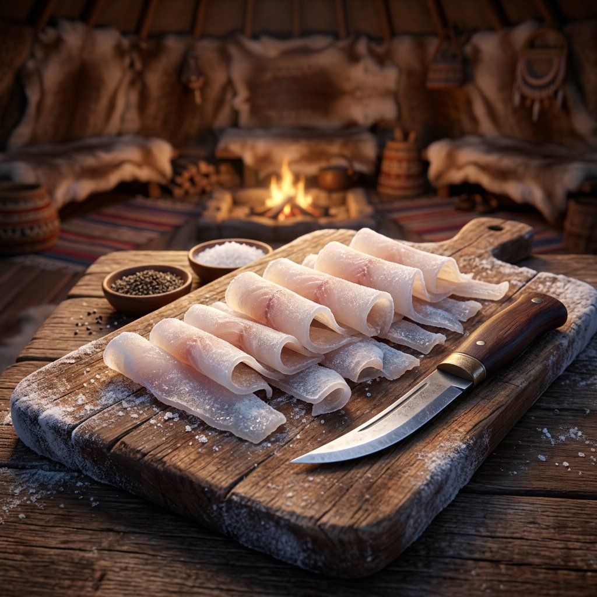
Рыбасвежая или строганина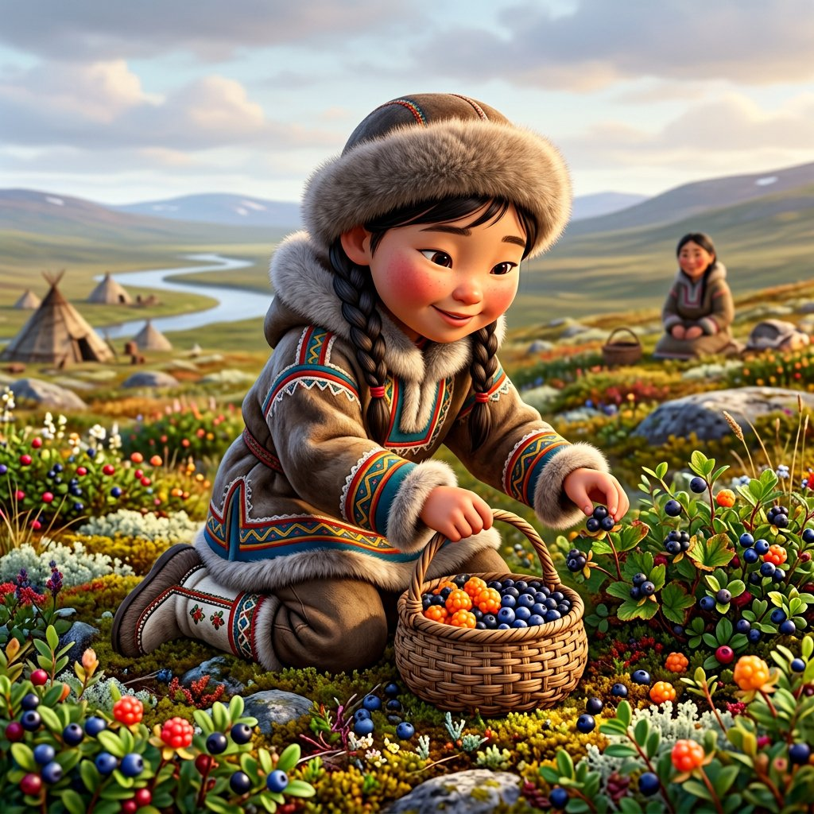
Ягодыморошка, голубика, шикша05 / 05
Язык и интересные факты
Север говорит с нами
- Самоназвание чукчей — «лыгъоравэтльан», что переводят как «настоящие люди».
- Чукотский язык относится к чукотско-камчатской языковой семье.
- Чукчи создали точные названия для природы, снега, животных и занятий тундры.
- Они славятся резьбой по моржовой кости: мастера изображают охоту, животных и старинные легенды.
- Сегодня традиции сохраняют в семьях, музеях, народных ансамблях и на праздниках.
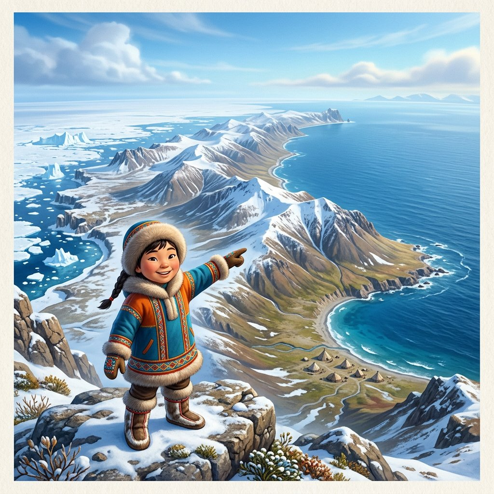
Факт 1
Между двумя океанами
Чукотку омывают Северный Ледовитый и Тихий океаны.
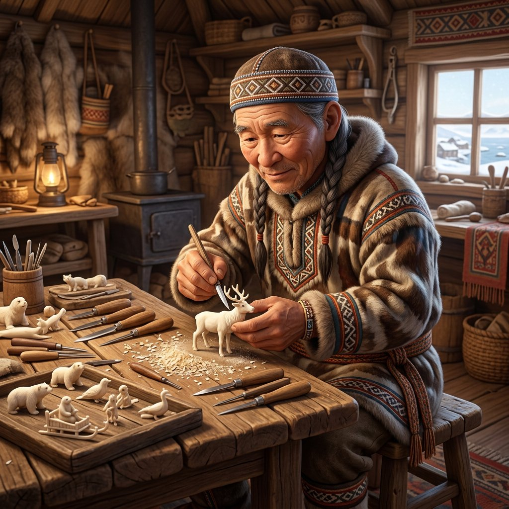
Факт 2
Косторезное искусство
Посёлок Уэлен известен мастерами резьбы по моржовой кости.
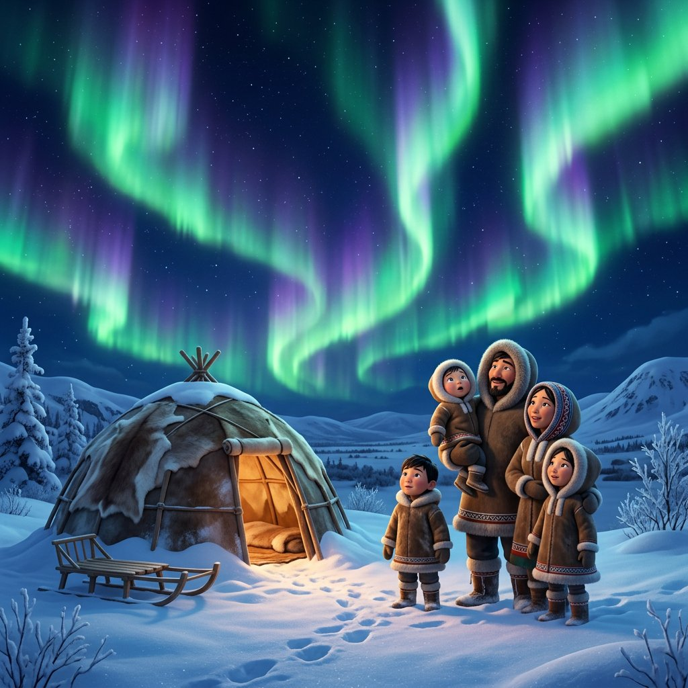
Факт 3
Полярное сияние
Зимой небо над тундрой вспыхивает зелёными и фиолетовыми лентами.
Финал
Проверь себя
Пять вопросов — по одному от каждого выступающего.
☆☆☆☆☆
Малая численность — большая культура
Беречь языки и традиции народов России — значит беречь нашу общую историю. Открыть шпаргалку докладчиков →